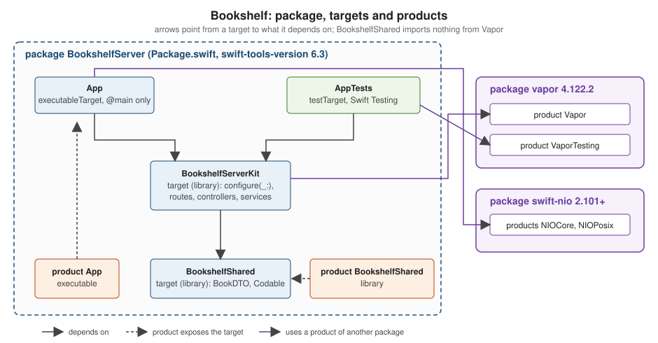

Project Structure and Swift Package Manager
|
This content was generated with the assistance of AI and should be verified against the official documentation before being relied on in production. |
This page is written against Vapor 4.122.2 on Swift 6.4 (swift-tools-version 6.3, the version used by the official
vapor/template; Vapor 4.122.2 itself declares tools version 6.0), checked on 2026-10-17. Vapor imposes very little on
how a project is organised: a Vapor application is an ordinary Swift package whose executable calls
configure(_:) and then runs the application. What the template gives you is a convention, and this page explains it
folder by folder and line by line, then shows how to grow past it. Vapor 3 projects (and the early Vapor 4 template)
looked different; those differences are called out where they matter. Vapor 5 is at the time of writing in beta
(5.0.0-beta.4) and is not covered in detail; its project layout is expected to follow the same shape.
SwiftPM itself — the manifest API, version requirements, plugins, publishing — is documented in the Swift Reference
page Swift Package Manager; this page only covers what a
server project needs on top of it. The tools around it (swift build, swift test, formatting) are in
Build and Tooling.
The folder structure generated by the template
vapor new bookshelf (the Toolbox) renders the vapor/template repository into a
new directory. With Fluent and Leaf selected, the result looks like this:
bookshelf/
├── Package.swift # the SwiftPM manifest
├── Package.resolved # created by the first build, records exact dependency versions
├── Public/ # static files served by FileMiddleware (CSS, JS, images)
├── Resources/
│ └── Views/ # Leaf templates (only with Leaf)
├── Sources/
│ └── bookshelf/ # the executable target, named after the project
│ ├── Controllers/ # RouteCollection types: request-handling logic grouped by resource
│ ├── DTOs/ # request and response bodies, kept apart from database models
│ ├── Migrations/ # Fluent Migration / AsyncMigration types (only with Fluent)
│ ├── Models/ # Fluent Model types and plain Content structs
│ ├── configure.swift # func configure(_ app: Application) async throws
│ ├── entrypoint.swift # @main enum Entrypoint
│ └── routes.swift # func routes(_ app: Application) throws
├── Tests/
│ └── bookshelfTests/ # Swift Testing tests using VaporTesting
├── Dockerfile
├── docker-compose.yml
├── .gitignore
└── .dockerignoreSource: Vapor docs: Folder structure
The official folder-structure page documents Public, Sources/App (with Controllers, Migrations, Models,
configure.swift, entrypoint.swift and routes.swift), Tests and Package.swift. The table adds what the current
template does beyond that page:
| Path | Purpose |
|---|---|
|
Files served as-is (see Static Files and File I/O), but only if |
|
Leaf templates (Leaf Templates); |
|
One type per resource that conforms to |
|
Data transfer objects (the types that are encoded to and decoded from JSON). The official folder-structure page lists
only |
|
Schema migrations (Migrations & Schema), registered with |
|
Fluent models (Fluent Models), and |
|
Registers middleware, databases, migrations, view renderer and then calls |
|
The |
|
|
|
Test target. The template uses Swift Testing with |
|
A multi-stage image build and a Compose file (Deployment with Docker); the Dockerfile moves |
The .gitignore of the template excludes .build, xcuserdata, *.xcodeproj, DerivedData/, .DS_Store,
db.sqlite, .swiftpm, .env (and .env.* except .env.example) and default.profraw. Never commit .env files
that contain real credentials.
Where older material differs
Guides written for Vapor 3 and for the first Vapor 4 releases show a different tree, and copying from them produces projects that no longer build:
-
Vapor 3 had
Sources/App/{app.swift,boot.swift,configure.swift,routes.swift},Sources/Run/main.swiftand aServicescontainer configured inconfigure.swift. Vapor 4 removed the services container (dependencies are properties and storage onApplicationandRequest), and the template no longer hasapp.swiftorboot.swift. -
For several years the Vapor 4 template still split the project in two targets: an
Applibrary with all the code and a tinyRunexecutable withmain.swift. The current template merges them into one executable target with anentrypoint.swiftmarked@main. The split is still a good idea for larger projects, and the section Splitting into modules builds it again on purpose. -
Early Vapor 4 text uses
.target(name: "App")plus.target(name: "Run", dependencies: ["App"]); since Swift 5.4 an executable is declared with.executableTarget. -
Folder names in the books (
Sources/App/Models,Sources/App/Controllers) still match, butDTOs/and a test target based on Swift Testing are new.
Package.swift line by line
The manifest of the template, with Fluent (PostgreSQL) and Leaf, is shown below. The {{...}} placeholders of the
Toolbox are already replaced by the project name bookshelf, and the Vapor requirement is raised from the template’s
floor, from: "4.121.4", to the 4.122.2 release this section is written against:
// swift-tools-version:6.3
import PackageDescription
let package = Package(
name: "bookshelf",
platforms: [
.macOS(.v13)
],
dependencies: [
// A server-side Swift web framework.
.package(url: "https://github.com/vapor/vapor.git", from: "4.122.2"),
// An ORM for SQL and NoSQL databases.
.package(url: "https://github.com/vapor/fluent.git", from: "4.13.0"),
// Fluent driver for PostgreSQL.
.package(url: "https://github.com/vapor/fluent-postgres-driver.git", from: "2.12.0"),
// An expressive, performant, and extensible templating language built for Swift.
.package(url: "https://github.com/vapor/leaf.git", from: "4.5.1"),
// Non-blocking, event-driven networking for Swift. Used for custom executors
.package(url: "https://github.com/apple/swift-nio.git", from: "2.101.0"),
],
targets: [
.executableTarget(
name: "bookshelf",
dependencies: [
.product(name: "Fluent", package: "fluent"),
.product(name: "FluentPostgresDriver", package: "fluent-postgres-driver"),
.product(name: "Leaf", package: "leaf"),
.product(name: "Vapor", package: "vapor"),
.product(name: "NIOCore", package: "swift-nio"),
.product(name: "NIOPosix", package: "swift-nio"),
],
swiftSettings: swiftSettings
),
.testTarget(
name: "bookshelfTests",
dependencies: [
.target(name: "bookshelf"),
.product(name: "VaporTesting", package: "vapor"),
],
swiftSettings: swiftSettings
)
]
)
var swiftSettings: [SwiftSetting] { [
.enableUpcomingFeature("ExistentialAny"),
.enableUpcomingFeature("InternalImportsByDefault"),
.enableUpcomingFeature("MemberImportVisibility"),
.enableUpcomingFeature("InferIsolatedConformances"),
.enableUpcomingFeature("ImmutableWeakCaptures"),
] }Source: vapor/template: Package.swift
The output shown below comes from a package that pins exact: "4.122.2" for Vapor so that it is reproducible; a real
application normally uses from:.
The tools version
The first line, // swift-tools-version:6.3, is not a comment for humans: SwiftPM reads it to decide which
PackageDescription API the manifest may use, and it is the minimum Swift toolchain that can build the package. It
also selects the default language mode: a tools version of 6.0 or later compiles every target in Swift 6 language
mode (complete data-race checking as errors) unless a target sets swiftLanguageModes. A package with tools version 5.x
stays in Swift 5 mode, where the same concurrency problems are only warnings. A project created from the current
template therefore needs a Swift 6.3 or newer toolchain, while Vapor 4.122.2 itself only requires tools 6.0, so a
library
that depends on Vapor can declare a lower tools version than the application.
platforms
platforms: [.macOS(.v13)] sets the deployment target on Apple platforms. It matters only on macOS (for example
swift run on a laptop or the Xcode build); on Linux the line is ignored. The template chooses macOS 13; if you lower
it, any
dependency or API that needs a newer macOS fails with an availability error. Xcode copies it to the
project’s minimum deployment target. Do not add iOS to this list unless you really build the server code for iOS.
dependencies and the products they provide
Each .package(url:from:) adds a package; a package exposes products, and a target must name the products it uses
with .product(name:package:) before it can import them:
| Package | Products used in a typical app | Role |
|---|---|---|
|
|
The framework; |
|
|
ORM and database driver |
|
|
Server-side templates |
|
|
Event loops and the optional global-executor takeover shown in the entrypoint |
from: "4.122.2" means "up to the next major version" (.upToNextMajor): SwiftPM may resolve 4.122.2 or any later
4.x release, but never 5.0.0. That is why Vapor 5, a new major version, will not arrive through a plain swift package
update; changing the requirement is a deliberate step. The template’s from: "4.121.4" resolves to the same latest
4.x release today; raising the floor only stops an older Package.resolved from keeping a release before 4.122.2.
Targets: .executableTarget and .testTarget
An .executableTarget produces a program. SwiftPM automatically creates an executable product of the same name, which
is what swift run bookshelf serve starts. The current template names the target {{name}}, after the project; the
rest of this section names it App by convention, the name the Vapor docs and the template repository itself use, which
is why its commands read swift run App serve. Its sources live in Sources/<target name>/, and the file with the
@main attribute is the entry point. An executable target is compiled as a module that can also be imported by tests,
which is why the template’s test target can depend on it with .target(name: "bookshelf") and use @testable import
bookshelf.
A .testTarget lives in Tests/<target name>/ and is run by swift test. It depends on the code under test and on
VaporTesting, which provides app.testing() and the request-testing API.
swiftSettings and the upcoming features
The manifest ends with a computed property swiftSettings shared by both targets. It enables five upcoming
features, language changes that become default in a later language mode but can be adopted earlier one by one:
| Feature | What it changes for a Vapor project |
|---|---|
|
Protocol types used as types must be spelled |
|
A plain |
|
Members of a type (methods, properties, extensions) are visible only when the module that declares them is imported in that file, which removes accidental "it compiled because another file imported it" behaviour. (SE-0444) |
|
A conformance to a protocol is inferred as isolated to a global actor when the type is isolated to that actor, avoiding data-race errors in main-actor types. (SE-0470) |
|
|
These flags are opt-in: a project that omits swiftSettings still builds. They are on in the template because they
are the direction of the language, but a page of the Vapor documentation or a book written without them will show
import Vapor in files that would need public import Vapor in a library, and RoutesBuilder instead of any
RoutesBuilder. Both forms are accepted when the flags are off; with the flags on, the compiler tells you exactly what
to
add.
Source: vapor/template: Package.swift
Package.resolved
The first swift build writes Package.resolved next to Package.swift. It lists every dependency in the graph (the
scratch package of this page resolves 25 packages, among them swift-nio and its satellites, async-http-client,
swift-log and swift-metrics) with the exact version or commit that was chosen. Later builds reuse those versions even
when newer ones exist.
-
Commit it for an application. Everyone, including CI and the Docker build, then compiles the same dependency versions.
-
swift package updatere-resolves within the manifest’s requirements and rewrites the file;swift package resolvefetches what the file says. -
swift build --force-resolved-versions(alias--disable-automatic-resolution) fails if the file is out of date with the manifest, which is the right flag for CI. -
A library usually does not commit it, because consumers resolve their own graph.
The template’s .gitignore does not ignore Package.resolved, matching this advice. Xcode (11 and later) reads and
updates the same file; .swiftpm/ is local state and is ignored.
Inspecting the graph
swift package describe # name, tools version, platforms, products and targets
swift package show-dependencies # the resolved dependency tree
swift build -c release # optimised build, the one the Dockerfile runs
swift test # runs Tests/For the scratch package of this page swift package describe prints the manifest name BookshelfServer, tools version
6.3, the macOS 13 platform, the two products and the four targets of Splitting into modules, and show-dependencies lists
vapor at 4.122.2 with async-http-client 1.36.2 and swift-nio 2.104.0 among its transitive dependencies.
Splitting into modules
One executable target is perfect for a service of a few thousand lines. Splitting becomes worthwhile when:
-
tests should link the application without the
@mainentry point, -
a second executable (a migration tool, a worker, a CLI) should reuse the same code,
-
the request and response types should be shared with an iOS or macOS client without dragging Vapor and SwiftNIO into the app, or
-
compile times matter: SwiftPM rebuilds only the modules that changed.
The layout used for the rest of this page keeps the Bookshelf server in one package, BookshelfServer, with three
source targets and one test target. The executable keeps the template’s name App, so swift run App serve and the
other pages' commands stay the same:
BookshelfServer/
├── Package.swift
├── Public/
├── Resources/Views/
├── Sources/
│ ├── BookshelfShared/ # shared DTOs: Codable + Sendable, no Vapor import
│ │ └── BookDTO.swift
│ ├── BookshelfServerKit/ # the server library: everything except @main
│ │ ├── Controllers/BooksController.swift
│ │ ├── DTOs/BookDTO+Content.swift
│ │ ├── Services/BookService.swift
│ │ ├── configure.swift
│ │ └── routes.swift
│ └── App/ # the thin executable
│ └── Entrypoint.swift
└── Tests/AppTests/BooksTests.swift
The manifest declares the split. The BookshelfShared library is also a product, so another package (an iOS client)
can depend on it alone:
// swift-tools-version:6.3
import PackageDescription
let package = Package(
name: "BookshelfServer",
platforms: [
.macOS(.v13)
],
products: [
// Importable by an iOS or macOS client without pulling in Vapor
.library(name: "BookshelfShared", targets: ["BookshelfShared"]),
.executable(name: "App", targets: ["App"]),
],
dependencies: [
.package(url: "https://github.com/vapor/vapor.git", from: "4.122.2"),
.package(url: "https://github.com/apple/swift-nio.git", from: "2.101.0"),
],
targets: [
.target(
name: "BookshelfShared",
swiftSettings: swiftSettings
),
.target(
name: "BookshelfServerKit",
dependencies: [
"BookshelfShared",
.product(name: "Vapor", package: "vapor"),
],
swiftSettings: swiftSettings
),
.executableTarget(
name: "App",
dependencies: [
"BookshelfServerKit",
.product(name: "Vapor", package: "vapor"),
.product(name: "NIOCore", package: "swift-nio"),
.product(name: "NIOPosix", package: "swift-nio"),
],
swiftSettings: swiftSettings
),
.testTarget(
name: "AppTests",
dependencies: [
"BookshelfServerKit",
.product(name: "VaporTesting", package: "vapor"),
],
swiftSettings: swiftSettings
),
]
)
var swiftSettings: [SwiftSetting] { [
.enableUpcomingFeature("ExistentialAny"),
.enableUpcomingFeature("InternalImportsByDefault"),
.enableUpcomingFeature("MemberImportVisibility"),
.enableUpcomingFeature("InferIsolatedConformances"),
.enableUpcomingFeature("ImmutableWeakCaptures"),
] }A bare string in dependencies ("BookshelfShared") names another target of the same package;
.product(name:package:) names a product of an external package. The library target cannot also be called App:
target names, and so module names, are unique within a package, and App is taken by the executable, which keeps the
template’s name. BookshelfServerKit follows the common Kit suffix for the library behind an executable, and is not
a name a type or a variable is likely to use.
Here BookshelfShared is a target of the server package so that one manifest builds the whole example. In the full
Bookshelf layout it is a package of its own, so that an iOS client does not even resolve Vapor; the server then
depends on it with .package(path: "../BookshelfShared"), as
Full-Stack Swift with iOS Clients shows.
The shared DTO module
BookshelfShared depends on nothing but the standard library. It is the wire format, and a client app can use the very
same type:
/// Wire format shared by the server and any Swift client. No Vapor import here.
public struct BookDTO: Codable, Hashable, Sendable {
public var isbn: String
public var title: String
public var author: String
public init(isbn: String, title: String, author: String) {
self.isbn = isbn
self.title = title
self.author = author
}
}Everything that crosses the module boundary is public, including the memberwise initialiser, which Swift never makes
public automatically. Sendable is declared because the type is passed between tasks (see
Actors, Isolation and Sendable). The server
module adds the Vapor-specific conformance:
public import BookshelfShared
public import Vapor
// BookDTO lives in the BookshelfShared module (no Vapor), so the server adds the Content conformance.
// Both modules belong to this package, which is why no @retroactive is needed.
extension BookDTO: Content {}Source: Vapor docs: Content
Content is Vapor’s protocol for types that can be decoded from a request and encoded to a response (Codable plus the
coders). Declaring it in an extension keeps BookshelfShared free of Vapor. The conformance is public because the
BookDTO type is, which is why both imports are public import under InternalImportsByDefault. If a type and a
protocol come from two other packages, Swift 6 warns about a retroactive conformance and expects
@retroactive Content (SE-0364); inside one package the compiler rejects that attribute. Once BookshelfShared is a
package of its own, the server’s conformance is retroactive and is written extension BookDTO: @retroactive Content {}.
The server library
BookshelfServerKit holds everything except the entry point. Its only public API is configure(_:), which both the
executable and the tests call:
public import Vapor
/// The one public entry point of the library: the executable and the tests both call it.
public func configure(_ app: Application) async throws {
// Serve everything under Public/ (disabled by default, so it must be added explicitly)
app.middleware.use(FileMiddleware(publicDirectory: app.directory.publicDirectory))
app.logger.info("Resources", metadata: ["views": "\(app.directory.viewsDirectory)"])
#if os(Linux)
app.logger.debug("Running on Linux")
#elseif os(macOS)
app.logger.debug("Running on macOS")
#endif
try routes(app)
}import Vapor
func routes(_ app: Application) throws {
app.get { _ in "It works!" }
let service = BookService(repository: InMemoryBookRepository())
try app.register(collection: BooksController(service: service))
}Source: Vapor docs: Routing
routes and everything else stay internal, so the library’s surface is one function and the compiler can enforce
that nothing outside the module reaches into controllers (see
Access Control). Tests that need internals use
@testable import BookshelfServerKit; that works in Debug builds, where SwiftPM compiles with testability enabled.
The thin executable
import BookshelfServerKit
import Logging
import Vapor
@main
enum Entrypoint {
static func main() async throws {
var env = try Environment.detect()
try LoggingSystem.bootstrap(from: &env)
let app = try await Application.make(env)
do {
try await configure(app)
try await app.execute()
} catch {
app.logger.report(error: error)
try? await app.asyncShutdown()
throw error
}
try await app.asyncShutdown()
}
}Source: vapor/template: entrypoint.swift
This is the template’s entrypoint without the optional global-executor comment, in a target named App. Because the
target contains a file with @main, SwiftPM compiles it as a library-style file (-parse-as-library); an executable
target that uses top-level code instead needs a file named main.swift, and the two styles cannot be mixed in one
target. Start it with swift run App serve --port 8080. The lifecycle of these calls is covered in detail by the
Application Lifecycle and the Entrypoint page.
Running it
$ swift run App routes
+-----+--------------+
| GET | / |
+-----+--------------+
| GET | /books |
+-----+--------------+
| GET | /books/:isbn |
+-----+--------------+
$ swift run App serve --port 8080 &
$ curl -s localhost:8080/books/9780441172719
{"title":"Dune","author":"Frank Herbert","isbn":"9780441172719"}JSON key order is not guaranteed, since the encoder serialises a dictionary-like representation.
Testing the library
Because the code lives in a library, the test target depends on BookshelfServerKit and calls configure without
starting the entry point (see Testing):
import BookshelfShared
import BookshelfServerKit
import Testing
import VaporTesting
@Suite("Books API")
struct BooksTests {
private func withApp(_ test: (Application) async throws -> Void) async throws {
let app = try await Application.make(.testing)
do {
try await configure(app)
try await test(app)
} catch {
try await app.asyncShutdown()
throw error
}
try await app.asyncShutdown()
}
@Test("GET /books/:isbn returns the seeded book")
func showBook() async throws {
try await withApp { app in
try await app.testing().test(.GET, "books/9780441172719") { res async throws in
#expect(res.status == .ok)
let book = try res.content.decode(BookDTO.self)
#expect(book.title == "Dune")
}
}
}
@Test("GET /books/:isbn answers 404 for an unknown ISBN")
func unknownBook() async throws {
try await withApp { app in
try await app.testing().test(.GET, "books/0000000000000") { res async throws in
#expect(res.status == .notFound)
}
}
}
}Both tests passed with swift test on the scratch package. The 404 case logs a warning for the Abort, which is
Vapor’s normal request log, not a failure. Always call asyncShutdown(): when an Application is deallocated without
being shut down, its deinit logs the error "Application.shutdown() was not called before Application deinitialized."
and falls back to the blocking shutdown().
Platform conditionals: #if os(Linux) and canImport
Vapor applications are developed on macOS and deployed on Linux (usually in a container), so code sometimes has to differ. There are two compile-time tools:
-
#if os(Linux)(oros(macOS),os(iOS),os(Windows)) selects code by operating system. -
#if canImport(Module)selects code by whether a module exists, which is more robust than testing the OS.
The classic case is URLSession: on Apple platforms it is part of Foundation, on Linux it was split into
FoundationNetworking:
import Foundation
#if canImport(FoundationNetworking)
import FoundationNetworking
#endif
/// URLSession lives in FoundationNetworking on Linux, in Foundation on Apple platforms.
func statusCode(of url: URL) async throws -> Int {
let (_, response) = try await URLSession.shared.data(from: url)
return (response as? HTTPURLResponse)?.statusCode ?? 0
}
#if os(Linux)
let platformName = "Linux"
#elseif os(macOS)
let platformName = "macOS"
#else
let platformName = "other"
#endifSource: swift-corelibs-foundation
In a server project you will mostly use Vapor’s own app.client (async-http-client) instead of URLSession, so these
guards appear around Apple-only frameworks such as Security or os.log, around Glibc versus Musl C imports, and in
tests that run on both systems. The manifest can do the same with a build condition:
.target(
name: "BookshelfShared",
swiftSettings: swiftSettings + [
.define("BOOKSHELF_LINUX", .when(platforms: [.linux])),
]
)Source: PackageDescription: SwiftSetting
#if BOOKSHELF_LINUX then works in that target. Prefer an os(...) check for a plain platform difference and a
custom flag only for a real build option. Linux builds also expose a few things that Apple builds hide, so build for Linux
regularly (a CI job or a swift:6.x container running swift build) rather than finding out in production; see
Interoperability with C, Objective-C
and C++
for C-level differences.
Layering: controller, service, repository
The folders say where things live; the dependencies say how they relate. A layout that has paid off in Bookshelf:
| Layer | Responsibility | Depends on |
|---|---|---|
Controller ( |
Decode the request, call one service method, map the result or error to a response. No business rules, no database code. |
Service, DTOs |
Service |
Business rules ("a member cannot borrow more than five books"), written against a protocol, free of |
Repository protocol |
Repository |
Persistence: the protocol is the port, the Fluent or in-memory type is the adapter. |
Fluent or storage |
DTOs / models |
Wire format and persistence entities, kept separate so a schema change does not change the API. |
Nothing |
The code of the example package follows this arrangement (controllers in detail: Controllers and Route Collections; services: Services, Storage and Dependency Injection). The service depends on a protocol, and the controller only knows the service:
import BookshelfShared
/// The port the service depends on: a repository protocol, not a database.
protocol BookRepository: Sendable {
func all() async -> [BookDTO]
func find(isbn: String) async -> BookDTO?
}
/// In-memory adapter; a Fluent-backed one would implement the same protocol.
actor InMemoryBookRepository: BookRepository {
private var books: [String: BookDTO] = [
"9780441172719": BookDTO(isbn: "9780441172719", title: "Dune", author: "Frank Herbert"),
]
func all() -> [BookDTO] { books.values.sorted { $0.title < $1.title } }
func find(isbn: String) -> BookDTO? { books[isbn] }
}
/// Business rules live here, free of HTTP types.
struct BookService: Sendable {
let repository: any BookRepository
func list() async -> [BookDTO] { await repository.all() }
func book(isbn: String) async -> BookDTO? { await repository.find(isbn: isbn) }
}import BookshelfShared
import Vapor
struct BooksController: RouteCollection {
let service: BookService
func boot(routes: any RoutesBuilder) throws {
let books = routes.grouped("books")
books.get(use: index)
books.get(":isbn", use: show)
}
@Sendable
func index(req: Request) async throws -> [BookDTO] {
await service.list()
}
@Sendable
func show(req: Request) async throws -> BookDTO {
guard let isbn = req.parameters.get("isbn"),
let book = await service.book(isbn: isbn) else {
throw Abort(.notFound)
}
return book
}
}Three Swift 6 details matter here. The repository is Sendable because the service, and so the controller, is captured
by route closures that run on any event loop thread; an actor is the simplest way to make a mutable store safe. The
route methods are marked @Sendable so they can be passed as use: handlers. And any BookRepository follows the
ExistentialAny rule. Note that handlers are async throws and return Content; Vapor turns the returned value, or
the thrown Abort, into the response.
How far to take layering, and when it becomes a separate deployment unit, is not a Vapor question. The general discussion is in Layering Backend and Frontend and Starting a New Project, and the same layering written for Rust is in axum: Project Structure. For a small CRUD service, controllers that talk to Fluent directly are perfectly acceptable; add the service and repository when a rule needs testing without a database or a second adapter appears.
Scripts, libraries and executables
Not every Swift program needs a package. A single file runs as a script with swift hello.swift, which is fine for a
five-line experiment but cannot depend on Vapor. As soon as there is a dependency, the unit is the package:
-
a library target (
.target) provides code to import and has no entry point; -
an executable target (
.executableTarget) has one, either amain.swiftor an@maintype; -
a product is what the outside world sees:
.libraryand.executableexpose targets to other packages and to the command line.
Publishing a library is a Git tag with a semantic version (1.2.0) on a public repository, optionally also a registry
entry; consumers write .package(url:from:). For an internal DTO package, a path dependency
(.package(path: "../BookshelfShared")) avoids tagging during development. The details of version requirements,
registries and swift package commands are in the Swift Reference page
Swift Package Manager. A hand-written HTTP server over raw
sockets, a common first exercise in server-side Swift books, is useful to understand what SwiftNIO and Vapor do for you,
but nothing in a real project should depend on it.
Common errors
| Symptom | Cause and fix |
|---|---|
|
The installed toolchain is older than the manifest’s |
|
The product is not listed in that target’s |
|
Another file used to supply the import. Add |
|
|
|
The target has both a |
|
Resolve the manifest first, then run |
Static files return 404 |
|
Works in Xcode, fails in |
Xcode’s scheme sets a custom working directory; SwiftPM uses the current one. |
Summary
-
The template is one executable target named after the project, with
Controllers,DTOs,Migrations,Models,configure.swift,entrypoint.swift,routes.swift, plusPublic,Resources/ViewsandTests. -
Package.swiftfixes the Swift tools version (6.3 in the template), the macOS deployment target, the Vapor dependency range, the targets and five upcoming-feature flags;Package.resolvedpins the exact versions and is committed for applications. -
A library (
BookshelfServerKit), a thin executable (App) and a Vapor-free DTO module (BookshelfShared) make the code testable, reusable by a client and faster to rebuild; the cost is a few lines ofpublicdeclarations. -
Layering is a dependency rule (controller, service, repository), not a folder rule; keep the Vapor types in the outermost layer.